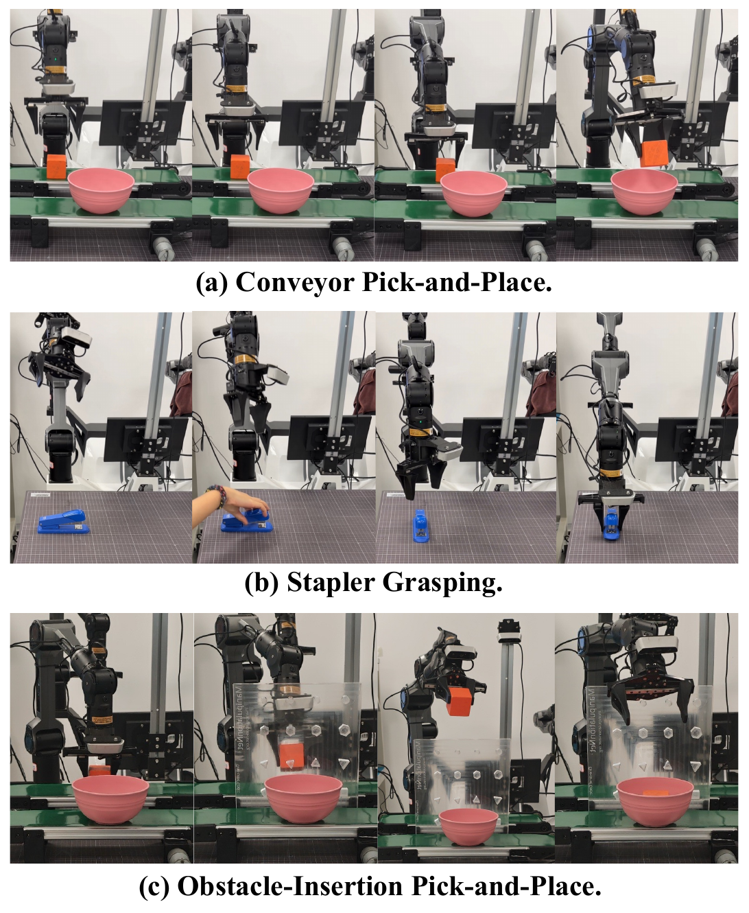
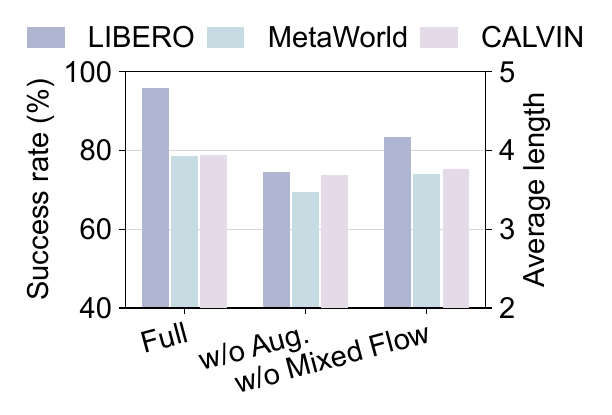
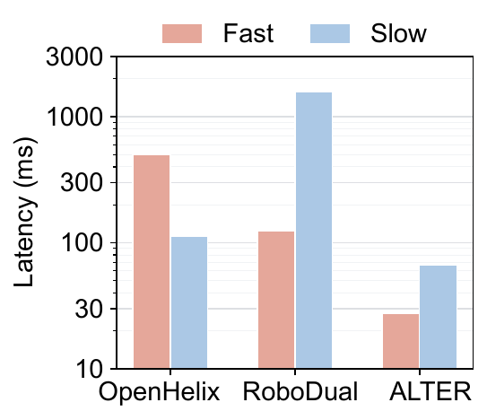

Supplementary Material
ALTER: Keeping Vision-Language-Action Control in Step with Real-World Dynamics
Abstract
Vision-language-action models enable generalist robotic manipulation, but expensive server inference and action-chunk execution limit closed-loop responsiveness. Existing execution methods leave active chunks unchanged, while many dual-system VLAs rely on model-specific representations and full action regeneration. We present ALTER, a server-assisted on-device VLA inference framework in which a pretrained server-side VLA periodically generates an executable action chunk and a compact on-device refinement module refines its execution-aligned segment using the latest observation while retaining the full chunk as longer-horizon context. Completed action chunks provide a model-agnostic interface across heterogeneous VLAs. Across five server-side VLAs and three simulation benchmarks, ALTER outperforms all evaluated baselines and matches or exceeds frequent replanning with 80% fewer server-side VLA invocations. Across nine real-world dynamic settings, it improves overall success by 70.4 percentage points, with 7.34–22.36 ms refinement latency on Jetson devices.
01 / Real-world evaluation
Real-robot results
Online correction under moving objects, reoriented tools, and newly introduced obstacles.

02 / Motivation
When a good plan becomes stale
A VLA action chunk carries both immediate motor commands and longer-horizon intent. Server inference is too slow to refresh every control step, yet executing an old chunk ignores observations arriving after generation. ALTER treats the active chunk as an evolving action prior: preserve its intent, and correct only the actions immediately ahead using fresh local context.
Fresh observations
React to physical changes without waiting for another full VLA query.
Long-horizon intent
Keep the remaining chunk as context instead of discarding a useful plan.
Model-agnostic interface
Exchange completed action chunks, not model-specific hidden features.
03 / Method overview
Server planning, on-device refinement
The edge loop updates the execution-aligned suffix while caching stable multimodal context.

04 / Main results
Performance at a glance
fewer server invocations
Compared with frequent VLA replanning while matching or exceeding its task performance.
Jetson refinement latency
Two-step FP16 TensorRT refinement on Orin Nano, Orin NX, and AGX Orin.
server-side VLA backbones
One action-level interface supports heterogeneous pretrained policies.

